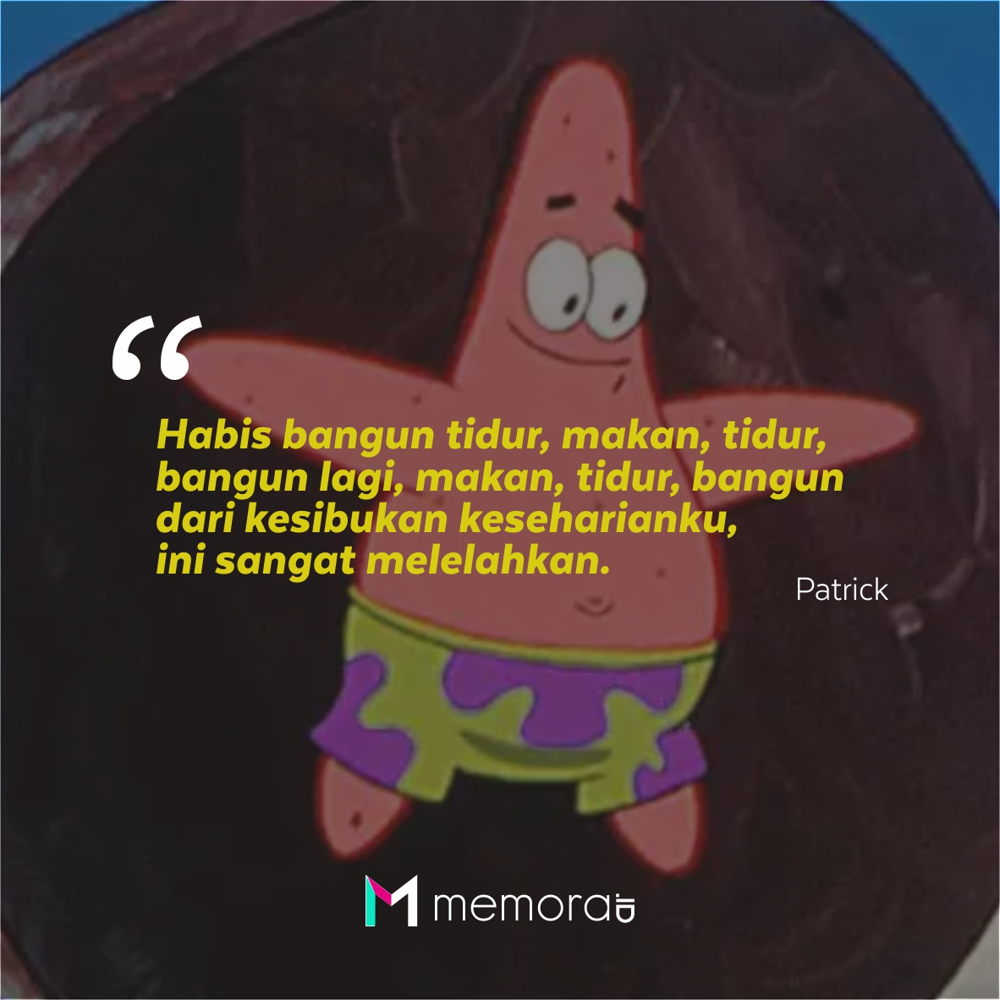

Kata “melakukan” merujuk pada usaha,pencapaian,atau kinerja. Ketika berbicara tentang melakukan kita berarti bicara tentang subjek yaitu pelaku, dan objek yaitu sesuatu yang dilakukan.

Menurut patrick star ,seni adalah ketika kamu diam tidak membuat masalah dan tidak mendapatkan masalah. Dan menurut bintang laut ini pertemanan adalah segalanya ,bahkan patrik rela menjadi bodoh agar bisa terus berteman dengan spongebob.